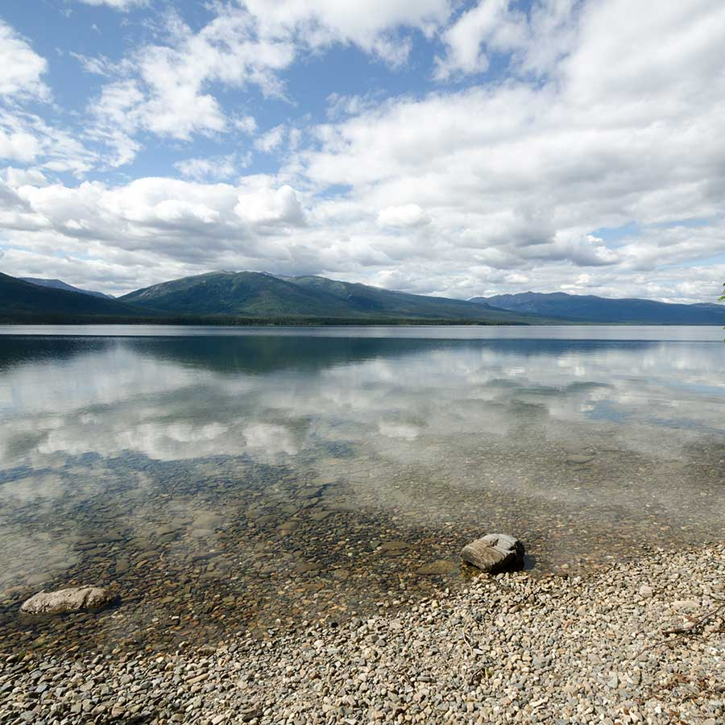
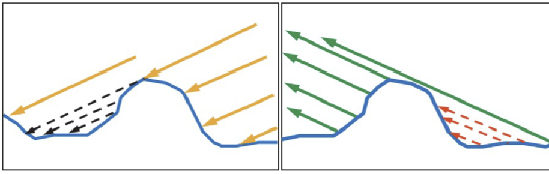

Physically Based Rendering
Gruppe 7 – VCDE
2026-06-25
Einleitung
Agenda
- Problem & Motivation (Team)
- 1 · Phong & seine Grenzen (Stefan)
- 2 · PBR-Prinzipien (Celia)
- 3 · Materialmodell (Alexander)
- 4 · Image Based Lighting (Stefan)
- Vertiefung: Materialalterung (Alexander)
- Quiz & Diskussion (Team)
Was ist PBR?
- Physically Based Rendering simuliert die Interaktion von Licht und Material physikalisch korrekt — mathematisch approximiert
- Statt Lichteffekte visuell zu schätzen → echte physikalische Gesetze
- Zwei Grundpfeiler: Mikrofacetten-Theorie und Energieerhaltung
Warum brauchen wir das?
- Fotorealismus — Industrie-Standard für moderne Echtzeitgrafik (Unreal, Unity) und Film
- Physikalische Korrektheit — ein Objekt reflektiert nie mehr Licht als es empfängt
- Konsistenz — ein einmal erstelltes Material wirkt unter jeder Beleuchtung plausibel
- Intuitive Workflows — Artists arbeiten mit Roughness und Metallic, nicht mit Specular-Exponenten
Das Ziel: Fotorealismus in Echtzeit
Goldenes PBR-Material kombiniert mit Image Based Lighting — Vorgeschmack auf Sektion 3 + 4.
1 · Phong & seine Grenzen
Einstieg — zwei Welten, eine Geometrie
Was wir gleich sehen:
- Identische Form, identische Beleuchtungssituation
- Links: das klassische Phong-Modell
- Rechts: ein modernes PBR-Material
Phong vs. PBR — direkter Vergleich
Klassisches Phong
Harter Glanzpunkt, keine Energieerhaltung.
Physically Based Rendering
Energieerhaltend, Fresnel an den Rändern.
Was war Phong nochmal?
Phong (Bui Tuong Phong, 1973) berechnet die Pixelfarbe als Summe von vier Beleuchtungs-Termen:
\[\text{Farbe} = \underbrace{e_{\text{mat}}}_{\text{Emissiv}} + \underbrace{a_{\text{light}} \cdot a_{\text{mat}}}_{\text{Ambient}} + \underbrace{(l \cdot n) \cdot d_{\text{light}} \cdot d_{\text{mat}}}_{\text{Diffus}} + \underbrace{(h \cdot n)^S \cdot s_{\text{light}} \cdot s_{\text{mat}}}_{\text{Spekular}}\]
- \(l\), \(n\), \(h\) = Licht-, Normalen- und Halbvektor (Halbvektor liegt zwischen Licht und Kamera)
- \(S\) = Shininess-Exponent (steuert die Schärfe des Glanzpunkts)
- Index \(\text{light}\) = Eigenschaft der Lichtquelle, Index \(\text{mat}\) = Eigenschaft des Materials
- Skalarprodukte wie \((l \cdot n)\) entsprechen dem Cosinus des Winkels zwischen den beiden Vektoren
Lokales Modell — kennt nur die direkte Beziehung Lichtquelle ↔︎ Pixel ↔︎ Kamera.
→ Die Schwäche: Lichtwerte werden stur addiert — ohne Begrenzung.
Das Kern-Problem: Energieerhaltung
- Phong addiert blind → ein Objekt kann mehr Licht reflektieren als es empfängt
- In der echten Welt ist das physikalisch unmöglich
- Resultat: übersättigte, plastikartige Materialien — der typische „Phong-Look”
→ PBR-Antwort: Eintreffendes Licht wird aufgeteilt in reflektierten und gestreuten Anteil. Was spiegelnd weggeht, kann nicht mehr diffus streuen. Das Budget bleibt gewahrt.
2 · PBR-Prinzipien
Die Rendering-Gleichung
\[ L_o(x,\omega_o) = L_e(x,\omega_o) + \int_{\Omega} f_r(x,\omega_i,\omega_o) \,L_i(x,\omega_i) \,(n\cdot\omega_i) \,d\omega_i \]
- \(L_i\) = einfallendes Licht
- \(L_o\) = ausgehendes Licht
- \(f_r\) = Materialantwort (BRDF)
Für PBR ist besonders \(f_r\) interessant:
→ beschreibt das Materialverhalten

l = Licht · v = Blick · n = Normale · h = Halfway
Mikrofacetten-Theorie
Reale Oberflächen wirken glatt – sind aber mikroskopisch rau.

- Oberfläche = Millionen winziger Spiegel
- Diese Spiegel nennt man Mikrofacetten
- Nur passend ausgerichtete Facetten reflektieren Licht direkt zur Kamera
→ Grundlage moderner PBR-Materialmodelle
Cook-Torrance BRDF
Der spekulare Anteil moderner PBR-Systeme basiert meist auf dem Cook-Torrance-Modell.
\[ f_s(\mathbf{v}, \mathbf{l}) = \frac{ F(\mathbf{v}, \mathbf{h}) \cdot D(\mathbf{h}) \cdot G(\mathbf{l}, \mathbf{v}) } { 4(\mathbf{n}\cdot\mathbf{l}) (\mathbf{n}\cdot\mathbf{v}) } \]
- F · Fresnel → Wie viel Licht wird reflektiert?
- D · Distribution → Wie sind die Mikrofacetten ausgerichtet?
- G · Geometry → Wie viel Licht wird blockiert?
Fresnel-Effekt

Quelle: https://www.keheka.com/fresnel-reflections-in-nuke/
- Reflexion hängt vom Blickwinkel ab
- Je flacher der Blickwinkel, desto stärker die Spiegelung
- Besonders sichtbar bei Wasser, Glas und Metall
Phong berücksichtigt diesen Effekt nicht.
Distribution
D · Distribution
- Beschreibt die Verteilung der Mikrofacetten
- Roughness steuert die Streuung
- Glatte Oberfläche → scharfe Reflexion
- Raue Oberfläche → breite Reflexion
D bestimmt, in welche Richtungen Licht reflektiert wird.
Geometry
G · Geometry

- Shadowing: Mikrofacetten blockieren einfallendes Licht
- Masking: Mikrofacetten verdecken reflektiertes Licht
G berücksichtigt diese gegenseitige Abschattung.
Quelle: http://wiki.ktxsoftware.com/Physically-Based-Rendering.html
Zusammenspiel der Cook-Torrance BRDF
| Term | Aufgabe |
|---|---|
| F | Wie viel Licht wird reflektiert? |
| D | In welche Richtung wird reflektiert? |
| G | Wie viel Licht wird blockiert? |
| Nenner | Korrekte physikalische Skalierung |
\[ f_s = \frac{F \cdot D \cdot G} {4(n\cdot l)(n\cdot v)} \]
→ Erst das Zusammenspiel aller Terme ergibt eine realistische Reflexion.
Energieerhaltung
\[ E_{out} \le E_{in} \]
Eine Oberfläche darf niemals mehr Licht reflektieren als sie empfängt.
Lösung in PBR
Mehr Spiegelung ⇒ weniger Diffusion
Weniger Spiegelung ⇒ mehr Diffusion
Gesamtenergie bleibt erhalten
Reflexion und Diffusion teilen sich dasselbe Energiebudget.
Zusammenspiel der Prinzipien
- Mikrofacetten beschreiben die Oberfläche
- Fresnel bestimmt die Winkelabhängigkeit
- Distribution beschreibt die Rauheit
- Geometry berücksichtigt Abschattung
- Energieerhaltung hält alles physikalisch plausibel
Gemeinsam ermöglichen sie realistische Materialien unter jeder Beleuchtung.
3 · Materialmodell
Von der BRDF zum Metal-Roughness-Workflow
- Kapitel 2: Cook-Torrance mit \(D\), \(F\), \(G\) – in der Engine nicht direkt einstellbar
- Stattdessen:
baseColor,metallic,roughness(+ Texture Maps) - Babylon.js:
PBRMetallicRoughnessMaterialals praktische Steuerungsebene
Base Color, Metallic & Roughness
- Gleiche Base Color, unterschiedliche Bedeutung
- Nichtmetall: Farbe überall sichtbar
- Metall: Farbe nur in Reflexionen
- Roughness: niedrig = fokussierte Reflexion, hoch = gestreute Reflexion
Demo: Holzfass – global vs. Maps
Exkurs: OpenPBR – über Metal/Roughness hinaus

Schichtmodell · OpenPBR Spec.
- Metal/Roughness = Basisfall in Babylon.js
- OpenPBR: Coat, Fuzz, Subsurface, Thin-Film …
Beispiel-Render · OpenPBR Shader Playground
- MaterialX: Referenzimplementierung im Browser
Grenze: Punktlicht reicht für Metall nicht
Ohne IBL · nur Punktlichter
Mit IBL · Umgebung sichtbar
4 · Image Based Lighting (IBL)
Der fehlende Baustein im PBR-System
- Das PBR-Material ist physikalisch korrekt — aber passiv
- In einer schwarzen Welt bleibt selbst perfektes Gold schwarz
- Was fehlt: Lichtinformation aus der Umgebung
- Das Materialmodell sagt wie ein Objekt auf Licht reagiert. IBL sagt welches Licht überhaupt da ist.
Was ist Image Based Lighting?
- HDRI statt Punktlicht — 360°-Panorama der echten Welt (High Dynamic Range Image)
- Jeder Pixel ist eine Lichtquelle — Sonne liefert viel Energie, Himmel sanftes Blau
- Konsequenz: Energiebudget aus allen Richtungen — nicht nur aus einer
Drei Dinge, die IBL für PBR möglich macht:
- Vervollständigt die Energieerhaltung (definiertes Umgebungs-Budget)
- Macht Metallizität sichtbar (Spiegel braucht etwas zum Spiegeln)
- Liefert den Kontext für den Fresnel-Effekt (Licht aus allen Winkeln)
Live-Demo: Eine Kugel, fünf Welten
Wie schafft das die GPU in Echtzeit?
Echtes Integral pro Pixel pro Frame?
→ Viel zu teuer.
Trick (Epic Games, 2013): Split-Sum-Approximation. Das Integral wird in zwei vorberechnete Teile zerlegt:
\[L_{\text{IBL}} \approx \underbrace{\text{PreFilteredMap}(R,\,\alpha)}_{\text{Licht der Umgebung}} \;\cdot\; \underbrace{\text{BRDF-LUT}(n\cdot v,\,\alpha)}_{\text{Material-Antwort}}\]
- \(R\) = Reflexionsvektor, \(\alpha\) = Rauheit (Roughness)
- \(n \cdot v\) = Skalarprodukt aus Normale und Blickrichtung (= wie steil die Kamera auf die Fläche schaut)
- \(\text{PreFilteredMap}\) = vorab erzeugte, je nach Rauheit unscharfe Versionen der Umgebung
- \(\text{BRDF-LUT}\) = einmalig vorberechnete Look-Up-Textur mit den Material-Antworten
Vertiefung · Materialalterung
Warum Alterung eine PBR-Frage ist
- In echten Szenen ändern sich Materialwerte: Oxidation, Schmutz, Abnutzung
- Nicht nur Farbe, sondern auch Metallic, Roughness, Normal, AO/Cavity
- Kernthese: realistische Alterung = mehrere Maps gemeinsam verändern
Vier Maps, ein Slider

- Albedo: Rost, Patina, Verdunkelung
- Roughness: gealtert = matter – Reflexionen breiter gestreut
- Metallic: Oxid → nichtmetallisch
- Normal / AO: Mikrostruktur & Fugen (PBRMaterial Workflow)
Demo: Buckler-Schild altert
Grenzen & Ausblick
- Vereinfachung: prozedurale Masken, keine Korrosionsphysik
- In Produktion: Maps aus Substance Painter oder vorgebaute AO-/Curvature-Maps aus Blender
- Gleicher PBR-Workflow – nur detailliertere Texturen als Eingabe
Quiz & Diskussion
Lernzielabfrage — 3 Fragen
- Was ist der Unterschied zwischen Phong und PBR in einem Satz?
- Warum braucht PBR Image Based Lighting?
- Welche zwei zentralen Material-Parameter nutzt der PBR-Workflow?
Take-Aways
- Phong war gut, aber blind für Physik (Energieerhaltung)
- PBR-Prinzipien (Mikrofacetten, F·D·G, Energieerhaltung) lösen das mathematisch
- Materialmodell (Metallic/Roughness) macht es benutzbar für Artists
- IBL liefert das Licht — ohne sie ist PBR nur halb da
- Ausblick: Material über Zeit (Alterung) ist die nächste Frontier
Übersicht & Quellen
Wer hat was gemacht?
| Kapitel | Webseite | Präsentation |
|---|---|---|
| Einleitung | Team | Team |
| 1 · Phong & Grenzen | Stefan | Stefan |
| 2 · PBR-Prinzipien | Celia | Celia |
| 3 · Materialmodell | Alexander | Alexander |
| 4 · Image Based Lighting | Stefan | Stefan |
| Vertiefung · Materialalterung | Alexander | Alexander |
| Quiz & Diskussion | — | Team |
Bildquellen
- Fresnel-Effekt: https://www.keheka.com/fresnel-reflections-in-nuke/
Vielen Dank!
Fragen?
Celia Baumann · Stefan Jordan · Alexander Kohl